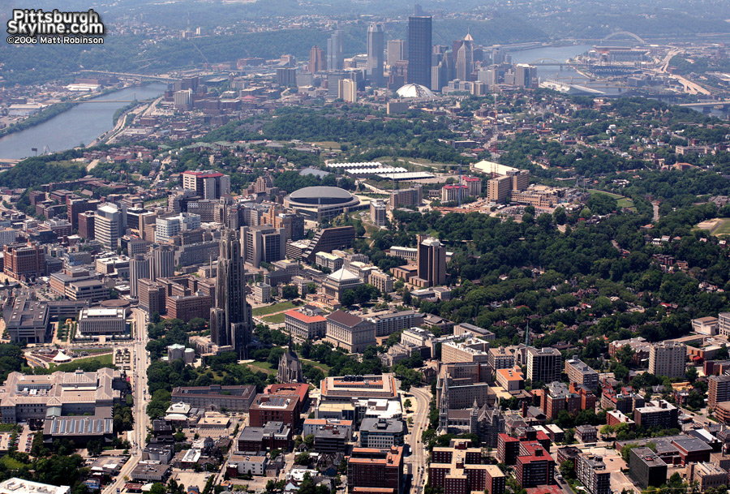
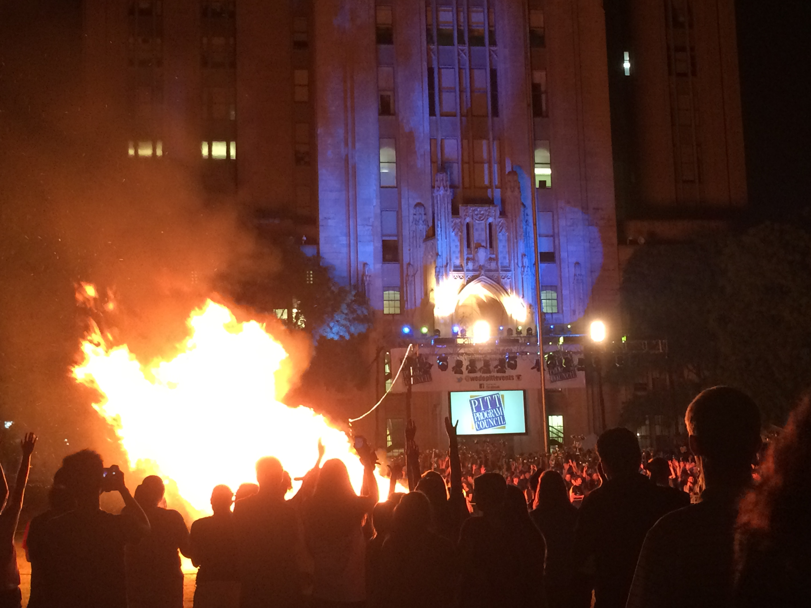
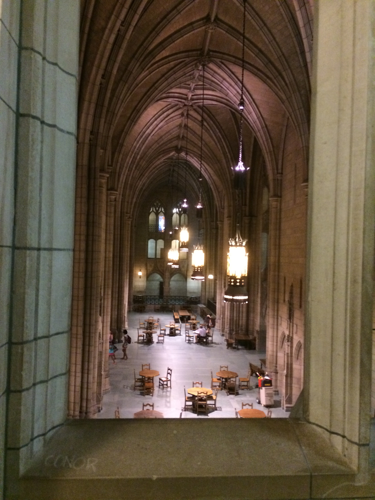
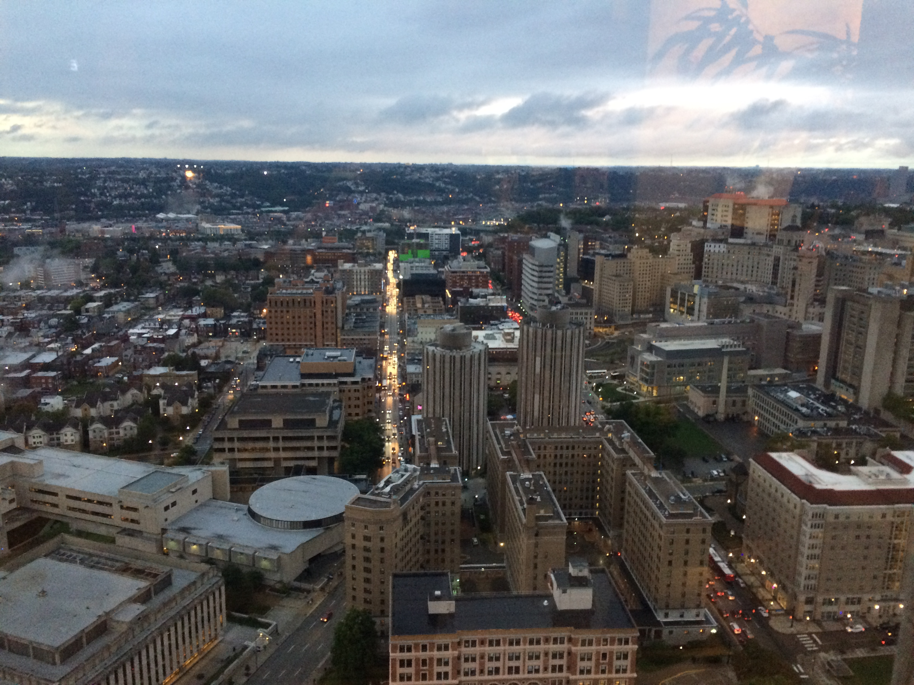
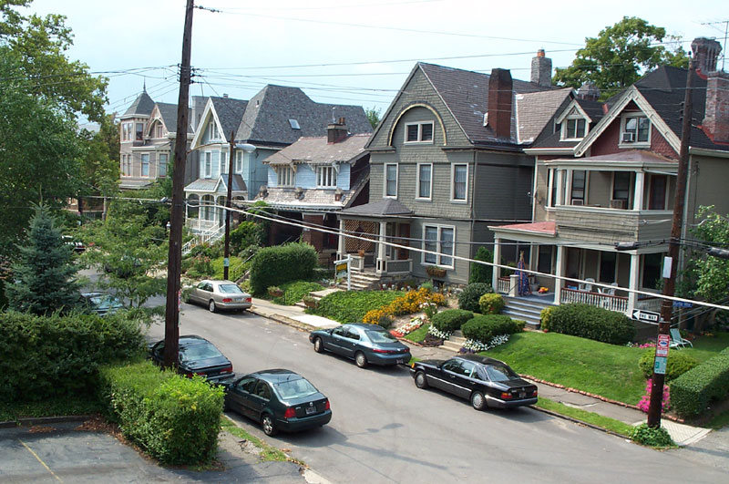
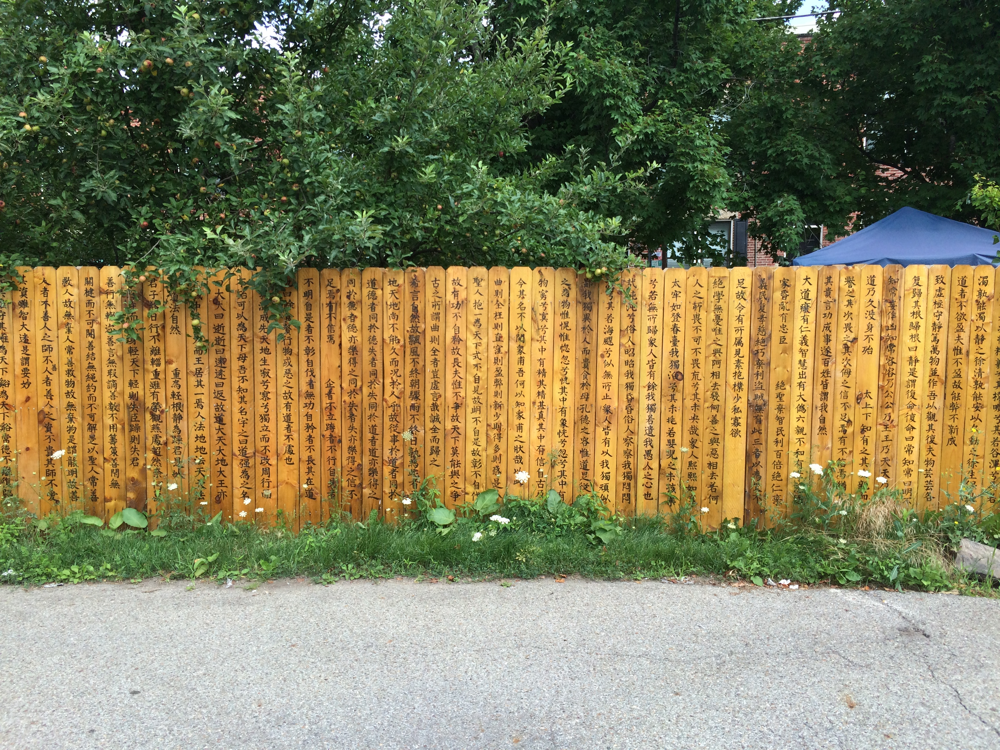
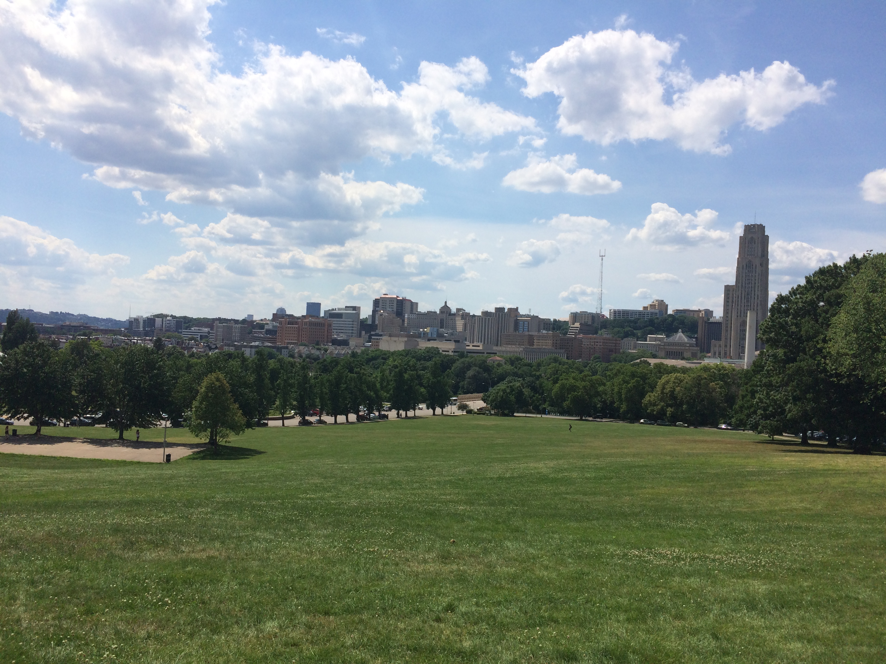

Click the map to visit an area

The Cathedral of Learning

This was one of my first nights in Pittsburgh - the annual bonfire rally. The dance team and football coach rallied the crowd to begin the season. They set off fireworks that shot up along cathy, and left a bonfire behind them. Though events like this don't occur every night, quite a few events do occur along Bigelow Boulevard right next to the cathedral. And if you ever find yourself a little lost around Oakland, Shadyside, Squirrel Hill, and some other neighborhoods around here, chances are you will be able to see cathy and find your way back to central Oakland.

If you can drag yourself away from the event going on, the inside of the cathedral has quite the gothic feel. There are a sprinkling of stained glass windows around the place and a big ornate gate in the center. Many have compared it to Hogwarts. Many of the rooms in the cathedral are themed towards a particular region. For example, there is an Egyptian room with seats that look like they are made from sand.
During Christmas time, they put up a giant tree in the center of the cathedral and the place gets even more magical.

Finally, if you can get yourself up to the 35th and 36th floors, you can see most of Pittsburgh. You might hear screaming and gunshots while on the floor, but don't fret, it's just the Honors College cinema screening a movie.
Upper Campus

Upper campus ventures up toward North Oakland. It starts at the gym, with its wonderful panther next to the steps. Soon beyond that, you'll find a line of Greek houses and some very nice University housing that don't look at all like the 1960s jails that the Towers are. And once again, from there you can see cathy!
You can take one of the Pitt buses up there if you don't want to walk up the hill, but I can't remember which.
Downtown

Point Park is the crown of downtown. It holds a giant fountain that overlooks the river and a park that sometimes holds festivals. You can see boats, bridges, and ducks all around you! One boat even has the title 'Too Much Fun'. All of that adds up to the perfect sunset spot. Nearby, at market square, crowds sometimes do the macarena.
To get there, all you have to do is hop on the 71B or 71D!
Shadyside

I lived over in shadyside for my first year in Pittsburgh. Don't give me that, I got my letter of acceptance two weeks before school started after applying in something like July. Nonetheless, Shadyside grew on me over time. It contrasts the city-like vibe of Oakland with a neighborhood-like feel and the hip (is that word outdated now?) streets of Ellsworth and Walnut. Most of the streets are filled with Victorian houses like in the image above, couresy of Wikipedia. Perhaps most importantly, Walnut Street has an Apple store for when you lose or break your recharger. If you are in Shadyside, this should be very walkable. On a side note, Pittsburgh is rated as one of the most walkable cities.

Besides Mellon park, one of my favorite little things in the neighborhood is the gate above. It was built by Andrew Mellon and is called 'Mellon Gate'. It doesn't come up easily when you search for it, but it's by where the busway connects to Maryland. I only found it because of Pokemon Go. Mellon park is also great and has lights in the ground that are turned on at nighttime. They look a lot like the sky, hence their name of the 'Mellon Stars'. If you walk around Shadyside enough, you'll notice there are quite a few unique figures around the place, such as an a golden Ivy decorated Lamp and flower mural. Don't forget the gelato from Mercurio's before heading back to Oakland!
Schenley Park and Panther Hallow Creek

Schenley Park holds a great view of the city. Now imagine seeing that view while watching a movie on a big screen. Oh wait, you can do that! There are cinema nights in the park where they either set up a big screen or project a movie on the side of a truck. Then you can watch the sun set while watching a movie. Unless it's winter, then it will already be dark. It gets really dark in the winter.

Located within Schenley Park, Panther Hallow Creek is a forested trail that runs next to a creek. The neighborhood near it was settled by a good deal of Italian immigrants, so the area tends to be decorated with the Italian colors of red, white, and green. Right outside the entrance, on the edge of the bridge, another panther stands guard. If you don't like panthers, you should probably give up on living in Pittsburgh now.